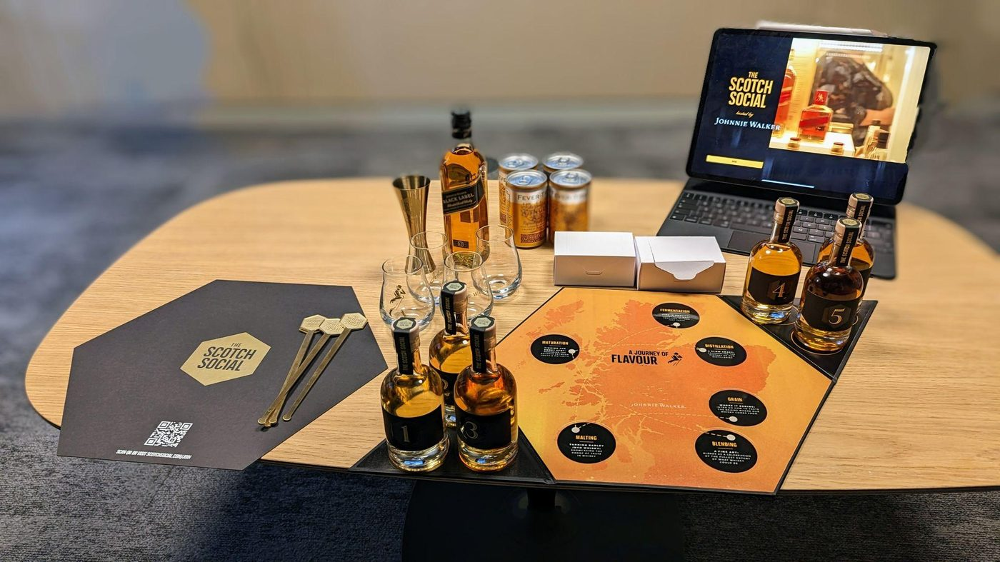
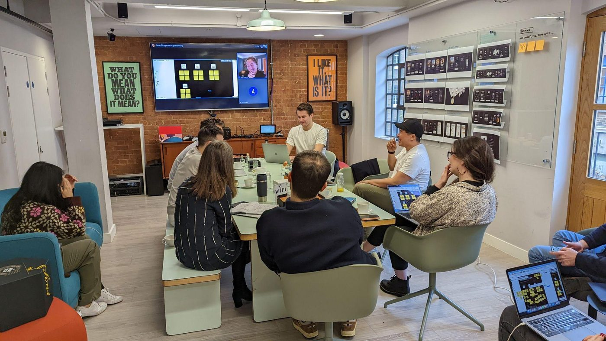

The Challenge
Diageo's Innovation Team needed to digitise a legacy, real-life whisky-tasting session into a scalable, at-home phygital experience, capturing subjective human taste data through an intuitive interface and translating it into a personalised flavour profile.
The Approach
- Phygital UX architecture. Designed a native tablet and mobile experience guiding users through real-time tasting, capturing instant like/dislike telemetry.
- Data-driven personalisation. Architected the UI for a flavour-profiling engine, translating sensory input into personalised product recommendations.
- Multi-agency orchestration. Directed external UX research and consumer-insight agencies to validate the hardware/software intersection.
The Impact
- Commercial launch. Shipped live on thebar.com, a brand-new premium D2C revenue stream.
- B2B white-label platform. Scaled the application into a modular framework capable of powering tasting experiences for any whisky brand in the portfolio.
- First-party data asset. Converted an offline tradition into a digital ecosystem capturing unique flavour-profile data for long-term personalisation.

